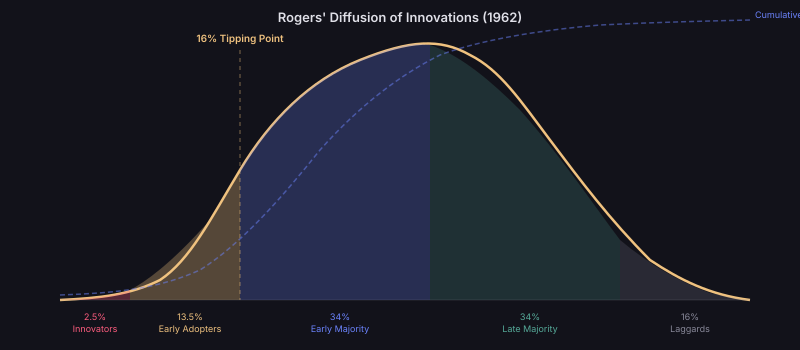

The Network Lens
Every idea exists within a network of minds. It is conceived in one node and must travel — through conversation, publication, teaching, or imitation — to reach others. The structure of this network is not neutral. It actively shapes which ideas spread and which die in isolation.
Network theory reveals a counterintuitive truth: an idea's position in the network often matters more than its intrinsic quality. A mediocre idea held by a well-connected hub can outcompete a brilliant insight trapped in a peripheral cluster.
Why Networks Matter for Ideas
Ideas don't spread through a uniform medium. They travel along specific pathways — citation links, collaboration networks, conference attendees, social media connections. The topology of these pathways creates bottlenecks, amplifiers, and dead ends that determine an idea's fate.
Understanding network structure lets us predict which ideas will propagate and which will remain trapped — regardless of their intellectual merit.
The Strength of Weak Ties
Granovetter's Breakthrough (1973)
Mark Granovetter's insight was paradoxical: the connections that matter most for spreading ideas are not your closest collaborators, but your acquaintances — your weak ties.
Strong ties (close colleagues, lab partners) tend to share the same information. They form tight clusters where ideas circulate internally but cannot escape. Weak ties bridge these clusters, carrying ideas between communities that would otherwise never interact.
His 1973 paper "The Strength of Weak Ties" has been cited over 78,000 times — itself an example of an idea that bridged sociology, computer science, epidemiology, and innovation studies. It is one of the three most-cited papers in all of sociology.
Imagine a series of islands (research communities) connected by bridges (weak ties). An idea born on one island can only reach the others by crossing these bridges. If there's only one bridge between two islands, that bridge is a single point of failure — and whoever controls it becomes a gatekeeper. Now imagine the bridge is a person who attends both a physics conference and a biology conference. They carry ideas between worlds.
Small-World Networks
Watts & Strogatz (1998)
Duncan Watts and Steven Strogatz showed that real networks — including academic citation networks — have a "small-world" property: high local clustering combined with short average path lengths. Their 1998 Nature paper has been cited over 45,000 times.
They demonstrated this on three real networks: the film actor collaboration network (225,226 nodes, average path length 3.65, clustering 0.79), the C. elegans neural network (282 nodes, path length 2.65, clustering 0.28), and the US power grid (4,941 nodes, path length 18.7, clustering 0.08).
In scientific collaboration networks specifically, Newman (2001) measured average path lengths of 4.0–5.9 across physics, biomedicine, and computer science — meaning any two researchers are separated by just 4–6 intermediate co-authors.
Scale-Free Networks & Hubs
Barabási & Albert (1999)
Albert-László Barabási discovered that real networks are not random — they are scale-free. A few nodes (hubs) accumulate vastly more connections than average through a mechanism called preferential attachment: new connections are more likely to go to already well-connected nodes.
In citation networks, this means a small number of foundational papers attract the vast majority of citations. In social networks of scientists, a few "super-connectors" bridge dozens of research communities.
Preferential attachment is the academic version of "the rich get richer." A paper with 1,000 citations is far more likely to be found and cited again than one with 10 citations — not because it's 100× better, but because it's 100× more visible. This creates a feedback loop that concentrates influence in a few landmark papers while the vast majority languish with single-digit citations.
Diffusion of Innovations
Rogers' Adoption Curve (1962)
Everett Rogers identified five adopter categories that describe how ideas spread through populations:
Innovators (2.5%) — risk-taking pioneers who encounter the idea first.
Early Adopters (13.5%) — opinion leaders who validate and translate the idea for others.
Early Majority (34%) — pragmatists who adopt once evidence of value emerges.
Late Majority (34%) — sceptics who adopt only under social or competitive pressure.
Laggards (16%) — resisters who adopt only when the old way becomes untenable.

The Adoption Curve
Rogers' five categories with the critical 16% tipping point marked. Once innovators and early adopters embrace an idea, cascade into the majority becomes self-sustaining. The dashed S-curve shows cumulative adoption.
Rogers' curve is the idea equivalent of a nuclear chain reaction. Below critical mass (the 16% threshold), the reaction fizzles — each adoption doesn't generate enough secondary adoptions to sustain spread. Above it, the reaction becomes self-sustaining and accelerates exponentially. The job of an idea's early champions is to push it past this threshold.
The Reproduction Number of Ideas
R₀ for Concepts
Borrowing from epidemiology, we can define a basic reproduction number R₀ for ideas: the average number of new minds "infected" by each carrier of the idea.
If R₀ > 1, the idea spreads exponentially. If R₀ < 1, it dies out. The effective R₀ depends on:
Transmissibility — how easily the idea can be communicated (simplicity, memetic fitness).
Contact rate — how many potential adopters each carrier encounters (network degree).
Duration — how long a carrier actively spreads the idea (enthusiasm half-life).
Susceptibility — what fraction of contacts are receptive (prior beliefs, paradigm lock-in).
Network Position as Amplifier
An idea's effective R₀ is not fixed — it depends critically on where in the network it originates. The same idea originating at a peripheral node vs. a hub can have wildly different R₀ values:
Network Gatekeepers
The Power of Betweenness
Nodes with high betweenness centrality — those that lie on many shortest paths between other nodes — act as gatekeepers. In academic networks, these are journal editors, conference organisers, and department heads who decide which ideas get exposure.
Historically, gatekeepers have both accelerated ideas (Eddington championing Einstein) and suppressed them (Kelvin opposing continental drift). The digital age has reduced but not eliminated gatekeeper power — algorithms now play a similar role.
Digital Networks: New Rules?
How the Internet Changed Idea Propagation
Pre-internet idea networks were constrained by geography, institutional access, and publication cycles. Digital networks introduced:
Near-zero transmission cost — sharing an idea costs nothing.
Collapsed path lengths — any researcher can access any paper instantly.
New hub types — Twitter accounts, GitHub repositories, and arXiv preprints create alternative prestige hierarchies.
Algorithmic amplification — recommendation systems create new preferential attachment mechanisms.
The Collapse of Network Advantage
If digital networks make every node effectively adjacent to every other, does network position cease to matter? Or does a new form of network advantage emerge — based not on structural position but on attention capture and algorithmic compatibility?
We may be witnessing a transition from topology-driven idea propagation (where your position in the network determines your idea's reach) to fitness-driven propagation (where the intrinsic properties of the idea determine its algorithmic amplification).
This transition is hypothesised but not yet confirmed. Early evidence from arXiv and Twitter suggests that network position still matters significantly, but its relative importance is declining compared to content properties.
Open Questions
- Do ideas spreading in digital networks follow the same S-curve as Rogers described, or has the shape changed?
- What is the effective "diameter" of the global knowledge network in 2026, and is it shrinking?
- Can we identify "bridge positions" algorithmically and predict which nodes will carry the next breakthrough between fields?
- How does AI-assisted research change the contact rate (c) in the R₀ formula — does it create superhuman idea spreaders?
- Is there a maximum network density beyond which idea competition becomes so fierce that no single idea can dominate?